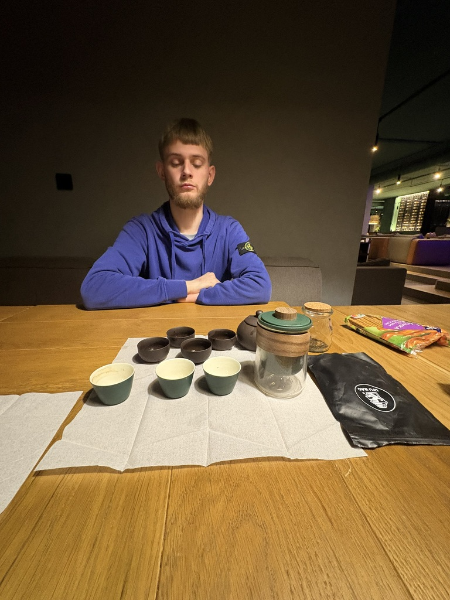

Світло крізь
темряву
Служіння ветеранам. Україна.
Привіт, дорога молитовна родино! Останній час видався для мене неймовірно насиченим, але водночас глибоким місяцем. Я мав можливість долучитися до різних команд та взяти участь у проведені двох ретритів.
Мені бувало складно комунікувати з людьми через внутрішню апатію, але я неймовірно радий, що Бог продовжує діяти через мене попри всі мої людські слабкості. Господь розвертає ці складні моменти на добро: мені стало легше розуміти хлопців, які проходять схожі випробування.
«Але Він сказав мені: "Досить тобі Моєї благодаті, бо сила Моя здійснюється в немочі". Тому я охоче буду хвалитися своїми немочами, щоб у мені оселилася сила Христова». — 2 до Коринтян 12:9

Час для відновлення 🏔️
Це був безцінний час тиші та молитви у зимових горах. Він дозволив мені відновити сили та почути Божий голос перед наступним сезоном нашого служіння.
Відповіді на молитви та історії служіння
Біль подруги та криза віри

Хочу поділитися з вами історією моєї подруги Ані. Вона переживає важку кризу в житті та кризу віри. Аня — дружина військового. Її перший чоловік загинув на цій війні, а теперішній чоловік зараз також служить на фронті. Через увесь цей біль вона не може знайти себе, не розуміє, куди рухатися далі, і, що найболючіше, поки не бачить у цьому Бога.
Я намагаюся підтримувати її як друг. Нам вдалося знайти для неї кваліфікованих психотерапевта та психіатра (до цього в неї був негативний досвід, коли лікарі просто проігнорували її біль). Зараз Аня розпочала лікування, і наше спілкування перейшло на глибший, духовний рівень. Вона починає шукати Бога в усьому цьому, і я бачу перші промінчики покращення.
«Близький Господь до зламаних серцем, і впокорених духом спасає... Він зцілює зламаних серцем, і перев'язує їхні рани». — Псалом 34:18 / Псалом 147:3
Прошу вас молитися за її повне емоційне та духовне відновлення.
Ретрит у Будапешті: коли двоє варті великих зусиль

Наш другий ретрит для ветеранів проходив у Будапешті. На жаль, через життєві обставини з шести запланованих учасників змогли поїхати лише двоє хлопців. У нас були великі сумніви: чи доречно проводити ретрит для такої малої кількості людей? До того ж дорогою виникало безліч перешкод.
Але Бог вкотре довів, що Він діє там, де важко. Цей ретрит пройшов чудово. Ми мали дуже глибокі розмови, відвідали багато гарних місць. Найціннішим було почути від хлопців, що тут вони нарешті відчули той самий спокій з минулого життя — де не треба нікуди бігти, не тисне війна, і можна почуватися безпечно та комфортно серед своїх.
«Мир залишаю вам, Мій мир даю вам; не так, як світ дає, Я даю вам. Нехай не тривожиться серце ваше і не лякається». — Від Івана 14:27
Новини від Даніка

Особливо мене вразила історія Даніка. Він потрапив на війну в 19 років. У перших же боях їхню колону розбили, і хлопець опинився в полоні. Він пробув там 2 місяці, пройшовши через тюрми в білорусі, росії та Криму. У нього була ампутована кисть руки та обморожені ноги, але попри ці жахи, Данік виявляв неймовірну мужність — він піклувався про інших полонених і намагався дістати їжу для товаришів.
Слухаючи його, я дивувався цій залізній стійкості й думав, що мені до нього далеко. Проте в особистій розмові Данік зізнався, що теж переживає дуже складні періоди в духовному та емоційному стані, але не складає рук і рухається далі.
Данік — не церковна людина, але Бог оточив його християнами. Дорогою назад ми багато спілкувалися. Він поділився, що йому дуже близька ідея християнства, жертва Христа та Божі заповіді, хоча через певні упередження він поки не відносить себе до жодної спільноти. Данік почав молитися після полону, щоб Бог керував його життям.
«Щоб Бога шукали вони, чи не помацають Його та не знайдуть, хоч Він і недалеко від кожного з нас». — Дії Апостолів 17:27
Будь ласка, моліться за покаяння Даніка — це неймовірна людина, яку Бог дуже любить і чекає у Своїй родині.
Подкасти, які відгукуються
Також цього місяця ми записали два важливих подкасти. Один із них — із заступником єпископа, у якого на війні загинув зять. Спікер дуже відкрито, зі сльозами на очах ділився цим етапом свого життя.
Після виходу епізоду ми отримали чимало повідомлень про те, як сильно це відгукнулося людям. З одного боку, прикро, що так багато українців зараз переживають цей страшний біль втрати. Але з іншого — саме для цього я й створюю цей контент: щоб люди знали, що вони не одні, знаходили однодумців та отримували Боже підбадьорення. І я бачу, що цей задум працює.
«Благословенний Бог... Отець милосердя і Бог усякої втіхи, Що втішає нас у всіх наших скорботах, щоб і ми могли втішати тих, що в усякій скорботі, тією втіхою, якою Бог потішає нас самих». — 2 до Коринтян 1:3-4
Плани та Superhumans
Щодо мене особисто — я проходжу власне відновлення. Мені стає краще, і я вже нарешті бачу світло попереду. Я безмежно вдячний за ваші молитви, я дійсно відчуваю їхню силу, вони допомагають мені йти далі.
Зараз я налагодив контакт із центром Superhumans і висловив бажання долучитися до команди «Рівний рівному». Це дозволить мені ще ефективніше допомагати ветеранам у їхньому відновленні та реабілітації й поверненні до цивільного життя.
«Носіть тягарі один одного, і так виконаєте закона Христового». — до Галатів 6:2
Також у нашій місії добігає кінця цей "робочий рік", і ми починаємо процес збору фінансової та молитовної підтримки на наступний період. Рік тому ви стали частиною моєї команди партнерів, за що я вам неймовірно вдячний. Завдяки вам ми можемо досягати сердець тих, хто віддав так багато заради нашого життя, допомагати їм знаходити сенси після пережитого жаху.
Молитовні потреби
- ✓ За подругу Аню — за зцілення її душевних ран, благословення в лікуванні та віднайдення віри й сенсу в Бозі.
- ✓ За Даніка — за його духовний пошук, звільнення від упереджень та щире покаяння й прийняття Христа.
- ✓ За моє служіння та плани — за можливість долучитися до команди «Рівний рівному» в Superhumans.
- ✓ За фінансову та молитовну підтримку — за формування команди партнерів на наступний робочий рік місії, щоб служіння ветеранам продовжувалося.
Дякую, що ви поруч у кожному кроці цього шляху!
З молитвою про вас, Олександр
Інвестуйте у відновлення ветеранів
Моє служіння повністю фінансується завдяки щедрій підтримці таких людей, як ви. Стаючи моїм фінансовим партнерoм, ви безпосередньо інвестуєте у духовне та психологічне відновлення ветеранів України. Чи готові ви стать частиною моєї команди?
Реквізити для пожертви

Відскануйте QR-код для швидкого переказу
Як зробити внесок:
Через Приват24:
- 1. Перейдіть за кнопкою вище або в "Мої Платежі"
- 2. Пошук: місія Україна для Христа
- 3. У полі "Залучив" введіть: 5544
- 4. Введіть ПІБ та суму.
Через Monobank:
- 1. Скопіюйте IBAN та відкрийте застосунок
- 2. "Інші платежі" → "Платіж за реквізитами (IBAN)"
- 3. Вставте IBAN UA063052990000026004045007863
- 4. Призначення: Благодійний внесок, залучив 5544
Через Cru.org (З усього світу):
- 1. Перейдіть за посиланням на офіційний сайт Cru
- 2. Виберіть суму та натисніть "Give a Gift"
- 3. Заповніть дані платіжної картки